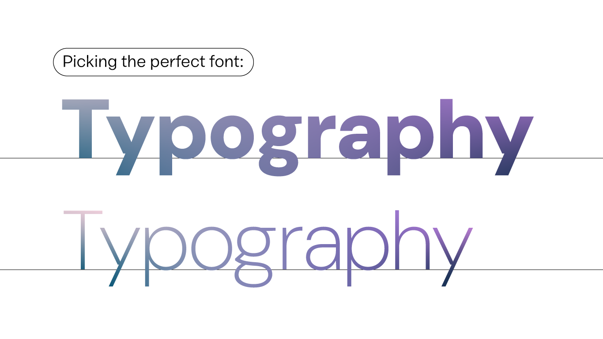

01. Typography

Typography serves two main purposes. The first is it must be legible. Can a user read and understand it? The second is how you use typography to create a mood or design aesthetic to attract a specific audience.
Choosing the right font for your website
While the scope of your project could narrow your search by ruling out fonts that don’t have the range you need, or guiding you toward those that do, remember that there are no hard and fast rules to determine the font with the right aesthetic. That’s a matter of the font’s personality, but to some extent personality depends on familiarity.
Many apps and websites still use a small selection of the most common fonts—a holdover from a time when this was the most practical approach to digital typography. It was once the case that using system fonts would be the safest choice because you could count on them to be in working order and available across most devices. Today, there’s no need to compromise by selecting a commonplace “workhorse” font. Web fonts tend to be just as reliable as system fonts, but with a greater variety to choose from.
The Importance of Point Sizes
When choosing web fonts, you often have to weigh several considerations together. While the length of your text helps determine which font you select, the size at which you’re setting type is another important factor. At relatively small sizes, up to 16pt, try sans serif options like Roboto, Montserrat and Raleway. Compared to serif designs, those without (or sans) serifs tend to have a taller “x-height,” defined as the distance between the baseline and midline of an alphabet and the height of the letter “x,” which makes a design more legible at small sizes. Sans serifs also tend to have relatively low stroke contrast and a more even stroke weight, which gives them an even “color” when scaled down and packed into a small space.

Using Multiple Fonts
With the basics out of the way, you can safely move on to more complicated decisions like font pairing. Pairing can be a fairly nuanced and complicated matter, even for type experts, but that doesn’t mean it should be avoided altogether. “There are endless combinations, and finding the right pairing can take a long time,” says designer Yuin Chen, who led last year’s Google Fonts update. There’s pleasure in trying out different combinations, so embrace the process and test as many options as you can—what works best might surprise you.
Some pairings work well due to their contrast, while other pairings thrive on similarity. Stark differences can make a layout appear more dynamic, while using different styles from a superfamily adds visual cohesion. If you’ve chosen a unique and striking display font for titling, try something toned-down and familiar for the body text. A classic choice would be to use the sans serif style for titling and the serif style for body text. Try these examples: Alegreya and Alegreya Sans (similar), Libre Franklin and Libre Baskerville (contrast).